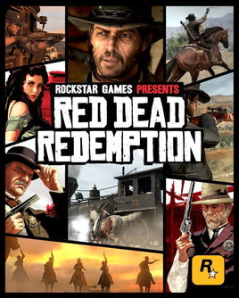
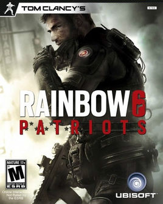

Welcome to Game Explo! This is a website for all players dicussion.
About us
Game Videos

"Red Dead: Redemption" is a studio produced by Rockstar San Diego. Rockstar's action adventure game featuring the history of the American West and gang grievances was officially launched on May 18, 2010. issued.This is a sequel to The Wilderness, which is based on the 20th century North American colonial pioneers and the industrial revolution. It tells the story of the protagonist John Marston's adventure in the western wilderness without law and order. . The gameplay is similar to GTA4. Rockstar upgraded the Thunder game engine during the development of this game, so the screen and special effects of this game are significantly improved compared to GTA4. At present, "Wild Darts: Redemption" has released two versions of PS3 and XBOX360.

"Rainbow Six" is a well-known series of shooting simulation games owned by Ubi, with several generations of corresponding works. Its platform includes the host and mobile client. At the same time, the game supports multiple people online for collaborative tasks or confrontation. The first work was released in August 1998.
The theme of the game "Rainbow Six" was adapted from the famous novel of the late famous military novelist Tom Clancy. The publisher Ubisoft also obtained the exclusive title of Tom Clancy for all its military games. The game describes and plays a multi-national cooperation counter-terrorism special force called "Rainbow", which carries out various corresponding combat tasks with their perspectives and combats the harm of terrorism to the world. The name "Rainbow Six" itself is codenamed John Clark, the founder of the Rainbow team, according to the original novel.